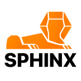 Sphinx Finance Sphinx 旨在设计一款能够应对当前 Defi 资产规模并随着其增长而适应未来 Defi 运行环境的预言机。 预言机应该具有与使用预言机协议的资产大小相同数量级的抗攻击性。
SpicySwap SpicySwap 是 Genius Contracts 专门为 Tezos 上的代币交换构建的下一代 DEX。 SpicySwap 由 SalsaDAO ($sDAO) 管理，它是更广泛的 Genius Contracts 平台和产品套件的管理实体。 SpicySwap 协议受到 Uniswap V2 通用框架的启发，但合约
Spin Spin 是基于 NEAR 协议构建的 DeFi 衍生品基础设施，这是一种可靠且可扩展的 L1 解决方案。 Spin 提供的链上订单簿解决方案为 DeFi 用户提供了与 CEX 竞争的体验。 Spin 成立于 2021 年
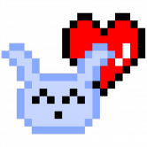 Spirit Orb Pets v0 Spirit Orb Pets v0 是婴儿宠物的游戏前合集！为了准备可交互的 v1 宠物，这些小家伙充当了早期的会员代币，将获得 $CARE 代币空投、物品 NFT 空投和独特的不和谐角色！今天
SpiritSwap SpiritSwap 是 Fantom Opera 链上的去中心化交易所（DEX）。 SpiritSwap 的设计基于 Uniswap 恒积自动做市商 (AMM)。在 AMM 中，流动性提供者只需存入一对代币，算法就会自动为这对代币
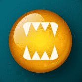 Splinterlands Splinterlands 是一款可收藏的多人交易纸牌游戏，其设计会让您想到口袋妖怪纸牌游戏和魔兽世界角色之间的共生关系。游戏有一个基于神秘世界的发达的故事情节。基于
Spoils Of War 玩和赚钱！ Spoils Of War 是区块链上的 NFT 游戏，适合有兴趣玩和赚钱的玩家 玩家可以收集、与怪物战斗并用它们换取真钱 Spoils Of War 游戏属于 Play-To-Earn 类型，玩家管理英雄与怪物
Sponge.finance Sponge.finance 在 BSC 上建立可持续的 DeFi 生态系统！ 通过收益框架、代币堆叠甚至被动收益以及 5% 的 $SPG 再分配来赚取 Sponge、Soak/Steam 代币。Sponge
Spooky Boys Mansion Party 在元界的深处，坐落于以太坊区块链雄辩的山丘上，有一个乡村俱乐部，以卓越、声望和尊重为定义。 Spooky Boys Country Club 提供 13,000 件独特的数字收藏品，通过所有权代表社
Spooky Rice Cooked Rice 是一个简单的智能合约，它充当 FTM 奖励池，只要奖励池中还有 FTM，每天都会返回池中 8% 的 FTM！用户可以在积累时选择吃他们的米饭（获得他们的 FTM
Spooky Skeletoons 修复了 TWWars 奖励分配的错误。 发布时间为 UTC 周二 18:00，现场会有不和谐。 （屏幕截图中的额外功能预告片）此外，初学者包今天仍然可以兑换，请在 http://Toonworldftm.com 中领
SpookySwap SpookySwap 是 Fantom Opera 网络的自动做市 (AMM) 去中心化交易所 (DEX)。 与其他 DEX 不同的是，我们通过 BOO 代币作为治理代币、多样化的农场、鼓励其他 Fantom 项目的健康生态的赠款
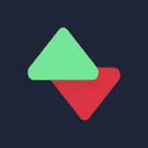 Sportbet.one portBet 是第一个基于 EOS 区块链的去中心化体育博彩平台。 与传统的在线体育博彩不同，我们的平台不需要身份验证和存款。 SportBet 确保匿名、透明的投注和即时支付给用
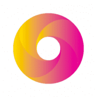 Sportcash One Sportcash One Dapp 是世界上最独特的体育和媒体 NFT 市场，由 SCOneX 代币提供支持 基于 Waves 区块链在 Layer1 上提供廉价和快速的交易 什么是 SPORTCASH ONE？ 用于体育和电子竞技行业的创新区
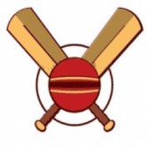 SportsDapp SportsDapp 是区块链上的 Sports Fantasy 应用程序，用户可以在其中预测和制定即将到来的比赛事件的策略。看看我们的测试版，你想要的一切都在你的手机里！ 1. 您的游戏您的规
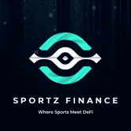 Sportz Finance Sportz Finance ($BALL) 是一个基于 DeFi 的体育博彩平台。 Sportz 在 NBA 季后赛期间推出。 我们在季后赛中创建了代表所有 16 支 NBA 球队的 16 个代币。 用户可以向我们的农场提供 BALL-Team LP 来赚取
Sputnik DAO 债券：1NEAR 投票期：5天 目的：发展 Sputnik DAO 并支持 DAO Mesh 的发展 Sputnik 提供世界上最灵活的 Wi-Fi 热点管理系统。 SputnikNet 是我们基于云的服务，它使 Wi-Fi 服务提供商能够通过
SquadUp Team 最好的审核、验证和值得信赖的方式来增加您的 BNB 每日。 说明： 1. 起始百分比（您在幻灯片上看到的）每天增加 0.5% 例如：在项目第 20 天的计划 1 中，起始百分比
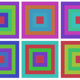 Squares on Chain Squares on Chain 是一个 100% 在链上创建的 NFT 集合。 它是一个自包含的机制，每个 NFT 都是独一无二的。 Squares on Chain NFT 的铸币价格是动态的，每次智能合约上的铸币调用都会增加 1
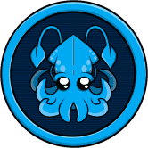 Squid DeFi Squid DeFi，Fantom Network 上的一个新的稳定 DeFi 代币，它帮助投资者保护他们的资金，因为我们提供一个透明的环境，让用户可以无忧地使用我们的服务，并
Squid NFT World Squid NFT World 是一款由 Biswap 提供支持的 P2E 游戏，具有多种加密奖励。 游戏的关键区别点： 多奖励池：未来用户将获得多种代币奖励：BSW、BNB等。 推荐计划：推荐
Squid Stake Squid Stake 是一个分散的收益农场，旨在通过稳定挂钩 APR (SPA) 通过精选农场和池提供高被动收入。 通过对原生 $SQUID 代币的不断回购和销毁以及流动性挖矿等激励模型，Sq
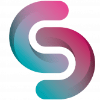 SquidVerse3D SQUIDVERSE 3D 是一个基于区块链技术的革命性创新去中心化金融游戏项目。该项目将形成自己的自给自足生态系统，直观地将多个公用事业连接在一起，形成一个称为 Squidverse
SquireTRX SQUIRETRX 使用先进技术和 Tron 区块链开发了系统。 系统更简单、更有利可图、更安全且 100% 透明，tron 是世界上最大的基于区块链的操作系统之一。 SQUIRETRX 使用先进技术和
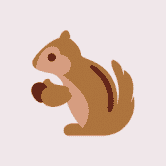 Squirrel Finance Squirrel.Finance 是 BinanceSmartChain 上的一个新生态系统，旨在为简单安全的 DeFi 提供支持，我们的旗舰和独特产品是提供保险农场。 您现在可以通过单击上面的类别或生态系统标签来发现相
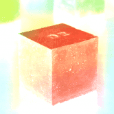 Stabil Finance Stabil.finance 是 Cronos 区块链上全新的去中心化交易所和收益农场。 专注于开发和提供最大化资产的服务。 主要目标和重点是为用户带来最大的价值，最大化利润。 赚取 - 单一
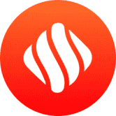 Stabilize Protocol Stabilize 是一种去中心化借贷协议，允许您针对用作抵押品的加密资产（基础资产和 ibTKN）提取无息贷款。 贷款以 U.TOKEN（一种与美元挂钩的稳定币）
Stable Finance Stable Finance 是一种算法稳定币协议，与 1 USDC 的价格挂钩。 该协议的底层机制动态调整 Stable 的供应量，使其价格相对于 USDC 的价格上涨或下跌。 与 Tomb 非常相似，Stable
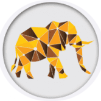 StableGaj StableGaj Finance 正在 Polygon 上构建稳定币 DeFi 生态系统。 我们的主要产品是一个去中心化的稳定币交易所，它允许用户在 Polygon 网络上高效地交换稳定币和锚定资产。 StableGaj 最初将支持以
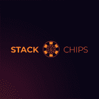 StackChips 为其用户提供股息模型的游戏。 排行榜的 50% 利润。 前五名 1-0.3% 2-0.25% 3-0,2% 4-0.15% 5-0,1% 让我们为您介绍一下。 http://Stackchips.Games 是具有红利经济学、实时聊天和虚拟现实的游戏您可以通过区块链
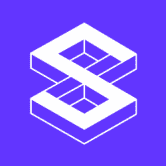 Stacker Ventures Stacker Ventures 作为一个 DAO 结构，发起去中心化基金，通过相关社区加速风险基金投资组合，并为基金管理提供制衡。 DAO 的第一个风险基金是一种加速的加密原生基金，投
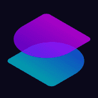 StackerDAOs StackerDAOs 是比特币 DAO 的一站式商店。 StackerDAO 协议是用于 Stacks 上模块化和可组合 DAO 的智能合约操作系统。 使用 StackerDAO，用户可以形成任何东西，从具有自动提案
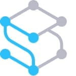 StackOS StackOS 是一种跨链开放协议，通过无代码、基于 UI 的应用程序部署引擎将开发人员与去中心化的计算能力连接起来。 StackOS 生态系统包括： -提供资源的各方 社区通过质


 挖矿奖励池，开发费用最低")


 提供支持。")